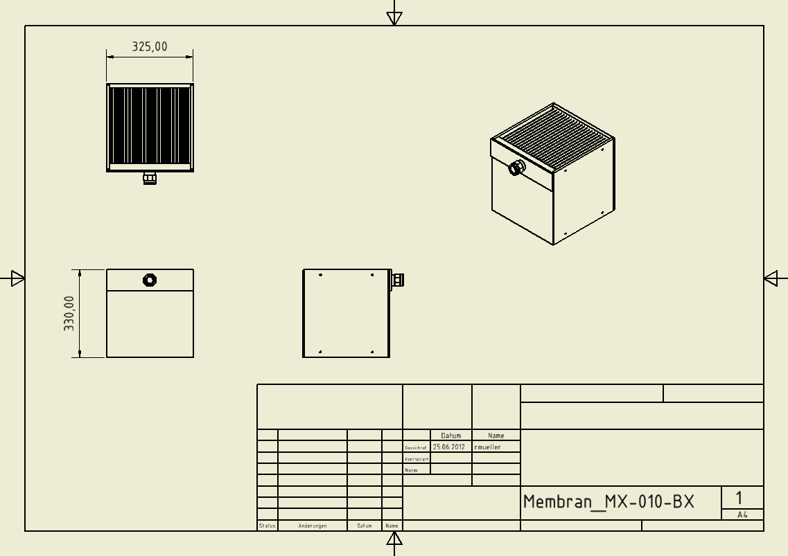

Dokumentation Membraneinheit MX-010-BX
| Membrane data | ||
| Membranfläche | m2 | 3,0 |
| Material | PES | |
| Trenngrenze | kDa | 150 |
| Permeabilität, Reinwasser | l/(m2*h*bar) | > 300 |
| Filtrationsleistung, Belebtschl. (kommunal) | l/(m2*h) | 15...25 |
| Betriebskonzentration, Belebtschl. (kommunal) | g/l | 8...15 |
| Betriebsdifferenzdrücke | mbar | 20...250 |
| Rückspüldruck | mbar | < 50 |
| pH Betrieb | 4...9 | |
| Temperaturbereiche | °C | 5 - 50 |
| erwartete Standzeit | zwischen 2 und 5 Jahren | |
| Further module data | ||
| Taschenausführung | Sandwich-Bauweise | |
| Verguss | wasser- und abwasserbeständiger Kunststoff | |
| Modulgehäuse | seitliche Schutzplatten, Kunststoff | |
| Außenmaße | ||
| Breite | mm | 325 ± 2,5 |
| Höhe | mm | 330 ± 0,0 |
| Tiefe | mm | 331 ± 2,5 |
| Tiefe mit Filtratleitung | mm | je nach Anschluss |
| Trockengewicht | kg | 12 |
| Nassgewicht | kg | ca. 26 |
| Anzahl Absaugungen vorne | Stk | 1 |
| Höhe Aufströmkanal | mm | -- |
| Betriebsweisen Modul |
kontiflow Puls / Pause aktiv und gravity flow |
|
| Filtratleitung | 1/2" IG | |
| Data for airing the membrane | ||
| Belüfter | mittelblasig | |
| Anströmfläche | m2 | 0,09 |
| spezif. Luftbedarf / Anströmfläche | m3/m2 | 100 |
| => Luftbedarf / Modul | m3/h | 9,0 |
| Druckverlust Belüfter | mbar | belüfterspezifisch |
| chemical cleaning | ||
| Reinigung | Laugen, Oxidationsmittel, Tenside, Säuren | |
| Reinigungsintervall | abhängig vom Abwasser | |
| Verbrauch an Reinigungslösung je Modul | ltr | ca. 15 |
| pH Reinigung | 2...11 | |
